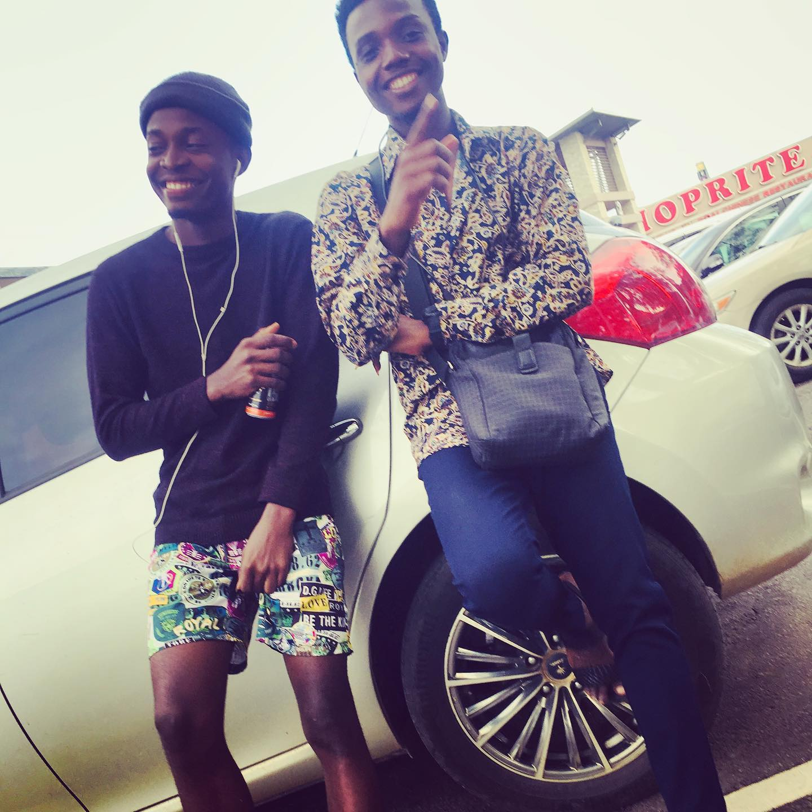

welcome to my throwback gallary
this was when i was in high school
and my first post on facebook to have 400 comments
to be frank i dont know what was going on here
here i wnt to church sang i choir and decided to take a picture
i was taking a picture out side and my mom was coming back from work and decided to join me

i went to festac shopping complex with a friend see as i dress like pastor zero steez zero rizz oshey
this picture was taking with my nokia E5 then
it was really lit back then i had to savemy lunch money to get that phone
still at festac mall with a friend i am holding my black bullet firmly i no go fit lose guard as omo gbo way be
i finally decided t take a picture i enjoy being annonimous but we gat keep some memory alive i wish i took more back then
my elder brother takig photo together after a long time , i realy dont have much photograph